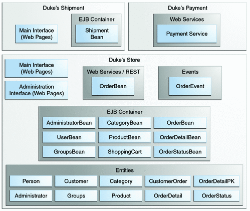
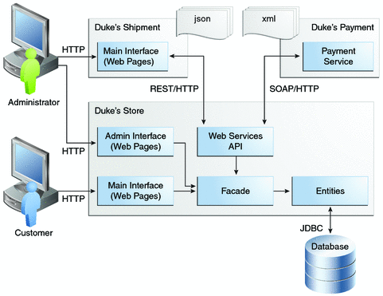
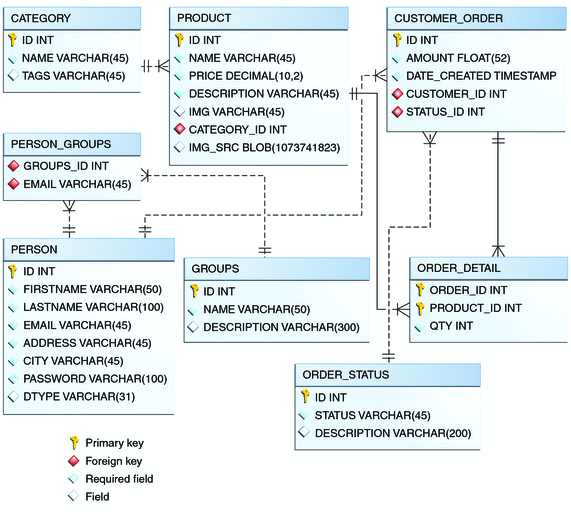

Design and Architecture of Duke’s Forest
Duke’s Forest is a complex application consisting of three main projects and three subprojects. Figure 53-1 shows the architecture of the three main projects that you will deploy: Duke’s Store, Duke’s Shipment, and Duke’s Payment. It also shows how Duke’s Store makes use of the Events and Entities projects.
Figure 53-1 Architecture of the Duke’s Forest Example Application
Duke’s Forest uses the following Java EE 6 platform features:
Java Persistence API entities:
Bean Validation annotations on the entities for verifying data
XML annotations for Java API for XML Binding (JAXB) serialization
Web services:
A JAX-WS web service for payment, with security constraints
A JAX-RS web service that is EJB based
Enterprise beans:
Local session beans
All enterprise beans packaged within the WAR
Contexts and Dependency Injection (CDI):
CDI annotations for JavaServer Faces components
A CDI managed bean used as a shopping cart, with conversation scoping
Qualifiers
Events and event handlers
Servlets:
A Servlet 3.0 file upload example
A servlet for dynamic image presentation
JavaServer Faces technology, using Facelets for the web front end
Templating
Composite components
Resources packaged in a JAR file so they can be found in the classpath
Security:
Java EE security constraints on the administrative interface business methods (enterprise beans)
Security constraints for customers and administrators (web components)
The Duke’s Forest application has two main user interfaces, both packaged within the Duke’s Store WAR file:
The main interface, for customers and guests
The administrative interface used to perform back office operations, such as adding new items to the catalog
The Duke’s Shipment application also has a user interface, accessible to administrators.
Figure 53-2 shows how the web applications and the web service interact.
Figure 53-2 Interactions between Duke’s Forest Components
As illustrated in Figure 53-2, the customer interacts with the main interface of Duke’s Store, while the administrator interacts with the administration interface. Both interfaces access a façade consisting of managed beans and stateless session beans, which in turn interact with the entities that represent database tables. The façade also interacts with web services APIs that access the Duke’s Payment web service. The administrator also interacts with the interface of Duke’s Shipment, which can be accessed either directly through Duke’s Shipment or from the administration interface of Duke’s Store by means of a web service.
The most fundamental building blocks of the application are the Events and Entities projects, which are bundled into Duke’s Store and Duke’s Shipment along with the Duke’s Resources project.
The events Project
Events are one of the core components of Duke’s Forest. The events project, included in all three of the main projects, is the most simple project of the application. It has only one class, OrderEvent, but this class is responsible for most of the messages between objects in the application.
The application can send messages based on events to different components and react to them based on the qualification of the event. The application supports the following qualifiers:
@LoggedIn: For authenticated users
@New: When a new order is created by the shopping cart
@Paid: When an order is paid for and ready for shipment
The following code snippet from the PaymentHandler class of Duke’s Store shows how the @Paid event is handled:
@Inject @Paid Event<OrderEvent> eventManager;
...
public void onNewOrder(@Observes @New OrderEvent event) {
if (processPayment(convertForWS(event))) {
orderBean.setOrderStatus(event.getOrderID(),
OrderBean.Status.PENDING_PAYMENT.getStatus());
logger.info("Payment Approved");
eventManager.fire(event);
} else {
orderBean.setOrderStatus(event.getOrderID(),
OrderBean.Status.CANCELLED_PAYMENT.getStatus())
logger.info("Payment Denied");
}
}
...To enable users to add more events to the project easily or update an event class with more fields for a new client, this component is a separate project within the application.
The entities Project
The entities project is a Java Persistence API (JPA) project used by both Duke’s Store and Duke’s Shipment. It is generated from the database schema shown in Figure 53-3 and is also used as a base for the entities consumed and produced by the web services through JAXB. Each entity has validation rules based on business requirements, specified using Bean Validation.
Figure 53-3 Duke’s Forest Database Tables and their Relationships
The database schema contains eight tables:
PERSON, which has a one-to-many relationship with PERSON_GROUPS and CUSTOMER_ORDER
GROUPS, which has a one-to-many relationship with PERSON_GROUPS
PERSON_GROUPS, which has a many-to-one relationship with PERSON and GROUPS (it is the join table between those two tables)
PRODUCT, which has a many-to-one relationship with CATEGORY and a one-to-many relationship with ORDER_DETAIL
CATEGORY, which has a one-to-many relationship with PRODUCT
ORDER_DETAIL, which has a many-to-one relationship with PRODUCT and CUSTOMER_ORDER (it is the join table between those two tables)
CUSTOMER_ORDER, which has a one-to-many relationship with ORDER_DETAIL and a many-to-one relationship with PERSON and ORDER_STATUS
ORDER_STATUS, which has a one-to-many relationship with CUSTOMER_ORDER
The entity classes that correspond to these tables are as follows:
Person, which defines attributes common to customers and administrators. These attributes are the person’s name and contact information, including street and email addresses. The email address has a Bean Validation annotation to ensure that the submitted data is well-formed. The generated table for Person entities also has a DTYPE field that represents the discriminator column. Its value identifies the subclass (Customer or Administrator) to which the person belongs.
Customer, a specialization of Person with a specific field for CustomerOrder objects.
Administrator, a specialization of Person with fields for administration privileges.
Groups, which represents the group (USERS or ADMINS) to which the user belongs.
Product, which defines attributes for products. These attributes include name, price, description, associated image, and category.
Category, which defines attributes for product categories. These attributes include a name and a set of tags.
CustomerOrder, which defines attributes for orders placed by customers. These attributes include an amount and a date, along with id values for the customer and the order detail.
OrderDetail, which defines attributes for the order detail. These attributes include a quantity, along with id values for the product and the customer.
OrderStatus, which defines a status attribute for each order.
The dukes-payment Project
The dukes-payment project is a web project that holds a simple Payment web service. Since this is an example application, it does not obtain any real credit information or even customer status to validate the payment. For now, the only rule imposed by the payment system is to deny all orders above $1,000. This application illustrates a common scenario where a third-party payment service is used to validate credit cards or bank payments.
The project uses HTTP Basic Authentication and JAAS (Java Authentication and Authorization Service) to authenticate a customer to a JAX-WS web service. The implementation itself exposes a simple method, processPayment, which receives an OrderEvent to evaluate and approve or deny the order payment. The method is called from the checkout process of Duke’s Store.
The dukes-resources Project
The dukes-resources project contains a number of files used by both Duke’s Store and Duke’s Shipment, bundled into a JAR file placed in the classpath. The resources are in the src/META-INF/resources directory:
- src/META-INF/resources/css
Two style sheets, default.css and jsfcrud.css
- src/META-INF/resources/img
Images used by the projects
- src/META-INF/resources/js
A JavaScript file, util.js
- src/META-INF/resources/util
Composite components used by the projects
The Duke’s Store Project
Duke’s Store, a web application, is the core application of Duke’s Forest. It is responsible for the main store interface for customers as well as the administration interface.
The main interface of Duke’s Store allows the user to perform the following tasks:
Browsing the product catalog
Signing up as a new customer
Adding products to the shopping cart
Checking out
Viewing order status
The administration interface of Duke’s Store allows administrators to perform the following tasks:
Product maintenance (create, edit, update, delete)
Category maintenance (create, edit, update, delete)
Customer maintenance (create, edit, update, delete)
Group maintenance (create, edit, update, delete)
The project also uses stateless session beans as façades for interactions with the JPA entities described in The entities Project, and CDI managed beans as controllers for interactions with Facelets pages. The project thus follows the MVC (Model-View-Controller) pattern and applies the same pattern to all entities and pages, as in the following example:
AbstractFacade is an abstract class that receives a Type<T> and implements the common operations (CRUD) for this type, where <T> is a JPA entity.
ProductBean is a stateless session bean that extends AbstractFacade, applying Product as Type<T>, and injects the PersistenceContext for the Entity Manager. This bean implements any custom methods needed to interact with the Product entity or to call a custom query.
ProductController is a CDI managed bean that interacts with the necessary enterprise beans and Facelets pages to control the way the data will be displayed.
ProductBean begins as follows:
@Stateless
public class ProductBean extends AbstractFacade<Product> {
private static final Logger logger =
Logger.getLogger(ProductBean.class.getCanonicalName());
@PersistenceContext(unitName="forestPU")
private EntityManager em;
@Override
protected EntityManager getEntityManager() {
return em;
}
...
Enterprise Beans Used in Duke’s Store
The enterprise beans used in Duke’s Store provide the business logic for the application and are located in the com.forest.ejb package. All are stateless session beans.
AbstractFacade is not an enterprise bean but an abstract class that implements common operations for Type<T>, where <T> is a JPA entity.
Most of the other beans extend AbstractFacade, inject the PersistenceContext, and implement any needed custom methods:
AdministratorBean
CategoryBean
GroupsBean
OrderBean
OrderDetailBean
OrderStatusBean
ProductBean
ShoppingCart
UserBean
The ShoppingCart, although it is in the ejb package, is a CDI managed bean with conversation scope, which means that the request information will persist across multiple requests. Also, ShoppingCart is responsible for starting the event chain for customer orders, as described in The events Project.
Facelets Files Used in the Main Interface of Duke’s Store
Like the other case study examples, Duke’s Store uses Facelets to display the user interface. The main interface uses a large number of Facelets pages to display different areas. The pages are grouped into directories based on which module they handle.
- template.xhtml
Template file, used for both main and administration interfaces. It first performs a browser check to verify that the user’s browser supports HTML 5, which is required for Duke’s Forest. It divides the screen into several areas and specifies the client page for each area.
- topbar.xhtml
Page for the login area at the top of the screen
- top.xhtml
Page for the title area
- left.xhtml
Page for the left sidebar
- index.xhtml
Page for the main screen content
- login.xhtml
Login page specified in web.xml. The main login interface is provided in topbar.xhtml, but this page appears if there is a login error.
- admin directory
Pages related to the administration interface, described in Facelets Files Used in the Administration Interface of Duke's Store
- customer directory
Pages related to customers (Create.xhtml, Edit.xhtml, List.xhtml, Profile.xhtml, View.xhtml)
- order directory
Pages related to orders (Create.xhtml, List.xhtml, MyOrders.xhtml, View.xhtml)
- orderDetail directory
Popup page allowing users to view details of an order (View_popup.xhtml)
- orderStatus directory
Pages related to order status (Create.xhtml, Edit.xhtml, List.xhtml, View.xhtml)
- product directory
Pages related to products (List.xhtml, ListCategory.xhtml, View.xhtml)
Facelets Files Used in the Administration Interface of Duke’s Store
The Facelets pages for the administration interface of Duke’s Store are found in the web/admin directory.
- administrator directory
Pages related to administrator management (Create.xhtml, Edit.xhtml, List.xhtml, View.xhtml)
- category directory
Pages related to product category management (Create.xhtml, Edit.xhtml, List.xhtml, View.xhtml)
- customer directory
Pages related to customer management (Create.xhtml, Edit.xhtml, List.xhtml, Profile.xhtml, View.xhtml)
- groups folder
Pages related to group management (Create.xhtml, Edit.xhtml, List.xhtml, View.xhtml)
- order directory
Pages related to order management (Create.xhtml, Edit.xhtml, List.xhtml, View.xhtml)
- orderDetail directory
Popup page allowing the administrator to view details of an order (View_popup.xhtml)
- product directory
Pages related to product management (Confirm.xhtml, Create.xhtml, Edit.xhtml, List.xhtml, View.xhtml)
Managed Beans Used in Duke’s Store
Duke’s Store uses the following CDI managed beans, which correspond to the enterprise beans. The beans are in the com.forest.web package.
AdministratorController
CategoryController
CustomerController
CustomerOrderController
GroupsController
OrderDetailController
OrderStatusController
ProductController
UserController
Helper Classes Used in Duke’s Store
The CDI managed beans in the main interface of Duke’s Store use the following helper classes, found in the com.forest.web.util package:
- AbstractPaginationHelper
An abstract class with methods used by the managed beans
- FileUploadServlet, ImageServlet
Classes used for image processing. FileUploadServlet uploads an image and stores its content in the database. ImageServlet retrieves the image content from the database and displays it. (JavaServer Faces technology does not provide this functionality, so a servlet is needed.)
- JsfUtil
Class used for JavaServer Faces operations, such as queuing messages on a FacesContext instance
- MD5Util
Class used by the CustomerController managed bean to generate an encrypted password for a user
Qualifiers Used in Duke’s Store
Duke’s Store defines the following qualifiers in the com.forest.qualifiers package:
- @LoggedIn
Qualifies a user as having logged in.
- @New
Qualifies an order as new.
- @Paid
Qualifies an order as paid.
Event Handlers Used in Duke’s Store
Duke’s Store defines event handlers related to the OrderEvent class packaged in The events Project. The event handlers are in the com.forest.handlers package:
- IOrderHandler
The IOrderHandler interface defines a method, onNewOrder, implemented by the two handler classes.
- PaymentHandler
The ShoppingCart bean fires an OrderEvent qualified as @New. The onNewOrder method of PaymentHandler observes these events and, when it intercepts them, processes the payment using the Duke’s Payment web service. After a successful response from the web service, PaymentHandler fires the OrderEvent again, this time qualified as @Paid.
- DeliveryHandler
The onNewOrder method of DeliveryHandler observes OrderEvent objects qualified as @Paid (orders paid and ready for delivery) and modifies the order status to PENDING_SHIPMENT. When an administrator accesses Duke’s Shipment, it will call the Order Service, a RESTful web service, and ask for all orders in the database that are ready for delivery.
Properties Files Used in Duke’s Store
The strings used in the main and administration interfaces of Duke’s Store are encapsulated into resource bundles to allow the display of localized strings in multiple locales. The resource bundles are located in the default package.
- Bundle.properties
Application messages in English
- Bundle_es.properties
Application messages in Spanish
- ValidationMessages.properties
Bean Validation messages in English
- ValidationMessages_es.properties
Bean Validation messages in Spanish
Deployment Descriptors Used in Duke’s Store
Duke’s Store uses the following deployment descriptors, located in the web/WEB-INF directory:
- beans.xml
An empty deployment descriptor file used to enable the CDI runtime
- faces-config.xml
The JavaServer Faces configuration file
- glassfish-web.xml
The configuration file specific to GlassFish Server
- jaxws-catalog.xml
A deployment descriptor for a JAX-WS web service client
- web.xml
The web application configuration file
The Duke’s Shipment Project
Duke’s Shipment is a web application with a login page, a main Facelets page, and some other objects. This application, which is accessible only to administrators, calls the Order Service (the RESTful web service exposed by Duke’s Store) and lists all orders under two status headings: Pending and Shipped. The administrator can either approve or deny a pending order. If approved, the order is shipped, and it appears under the Shipped heading. If denied, the order disappears from the page, and on the customer’s Orders list it appears as cancelled.
There is also a gear icon on the Pending list that makes an Ajax call to the Order Service to refresh the list without refreshing the page. The code looks like this:
<h:commandLink>
<h:graphicImage library="img" title="Check for new orders"
style="border:0px" name="refresh.png"/>
<f:ajax execute="refresh" render="out" />
</h:commandLink>
Enterprise Bean Used in Duke’s Shipment
The enterprise bean used in Duke’s Shipment, UserBean, provides the business logic for the application and is located in the com.forest.shipment.session package. It is a stateless session bean.
Like Duke’s Store, Duke’s Shipment uses the AbstractFacade class. This class is not an enterprise bean but an abstract class that implements common operations for Type<T>, where <T> is a JPA entity.
Facelets Files Used in Duke’s Shipment
Duke’s Shipment has only one page, so it has many fewer Facelets files than Duke’s Store.
- template.xhtml
The template file, like the one in Duke’s Store, first performs a browser check to verify that the user’s browser supports HTML 5, which is required for Duke’s Forest. It divides the screen into areas and specifies the client page for each area.
- topbar.xhtml
Page for the login area at the top of the screen
- top.xhtml
Page for the title area
- left.xhtml
Page for the left sidebar (not used in Duke’s Shipment)
- index.xhtml
Page for the initial main screen content
- login.xhtml
Login page specified in web.xml. The main login interface is provided in topbar.xhtml, but this page appears if there is a login error
- admin/index.xhtml
Page for the main screen content after authentication
Managed Beans Used in Duke’s Shipment
Duke’s Shipment uses the following CDI managed beans, in the com.forest.shipment package:
- control.ShippingBean
Managed bean that acts as a client to the Order Service
- web.UserController
Managed bean that corresponds to the UserBean session bean
Helper Class Used in Duke’s Shipment
The Duke’s Shipment managed beans use only one helper class, found in the com.forest.shipment.web.util package:
- JsfUtil
Class used for JavaServer Faces operations, such as queuing messages on a FacesContext instance
Qualifier Used in Duke’s Shipment
Duke’s Shipment defines the following qualifier in the com.forest.qualifiers package:
- @LoggedIn
Qualifies a user as having logged in
Properties Files Used in Duke’s Shipment
The Duke's Shipment properties files, located in the default package, are Bundle.properties, containing English strings, and Bundle_es.properties, containing Spanish strings. They are identical to the files in Duke's Store.
Deployment Descriptors Used in Duke’s Shipment
Duke’s Shipment uses the following deployment descriptors:
- web/WEB-INF/beans.xml
An empty deployment descriptor file used to enable the CDI runtime
- web/WEB-INF/faces-config.xml
The JavaServer Faces configuration file
- web/WEB-INF/glassfish-web.xml
The configuration file specific to GlassFish Server
- web/WEB-INF/web.xml
The web application configuration file
- src/conf/persistence.xml
The Java Persistence API configuration file